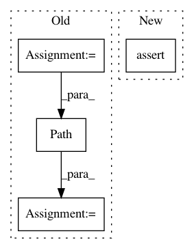

f2a35263aacacf10e1b2d622cd39c7c66ea39acb,src/python/pants/fs/fs_test.py,FileSystemTest,test_workspace_materialize_directories_result,#FileSystemTest#,73
Before Change
with temporary_dir() as tmp_dir:
path1 = Path(tmp_dir, "a.txt")
path2 = Path(tmp_dir, "subdir", "b.txt")
self.assertFalse(path1.is_file())
self.assertFalse(path2.is_file())
After Change
path1 = Path("a.txt")
path2 = Path("subdir/b.txt")
assert not path1.is_file()
assert not path2.is_file()
output = workspace.materialize_directories((
DirectoryToMaterialize(path="", directory_digest=digest),
In pattern: SUPERPATTERN
Frequency: 3
Non-data size: 4
Instances
Project Name: pantsbuild/pants
Commit Name: f2a35263aacacf10e1b2d622cd39c7c66ea39acb
Time: 2019-11-25
Author: ericarellano@me.com
File Name: src/python/pants/fs/fs_test.py
Class Name: FileSystemTest
Method Name: test_workspace_materialize_directories_result
Project Name: pantsbuild/pants
Commit Name: f2a35263aacacf10e1b2d622cd39c7c66ea39acb
Time: 2019-11-25
Author: ericarellano@me.com
File Name: src/python/pants/fs/fs_test.py
Class Name: WorkspaceInConsoleRuleTest
Method Name: test
Project Name: matplotlib/matplotlib
Commit Name: f9fbe96bf352d22fe6a2800d62af3bf4b62bf322
Time: 2020-03-12
Author: anntzer.lee@gmail.com
File Name: lib/matplotlib/tests/test_transforms.py
Class Name:
Method Name: test_clipping_of_log